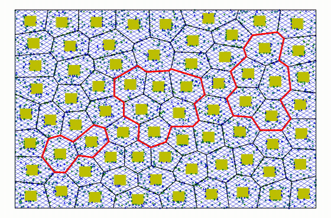
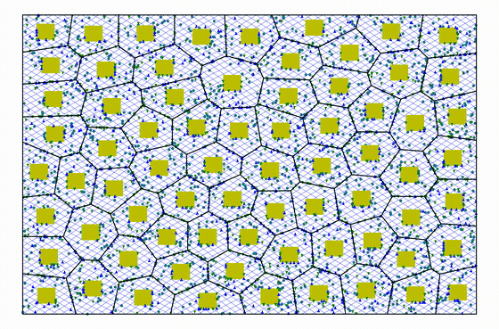
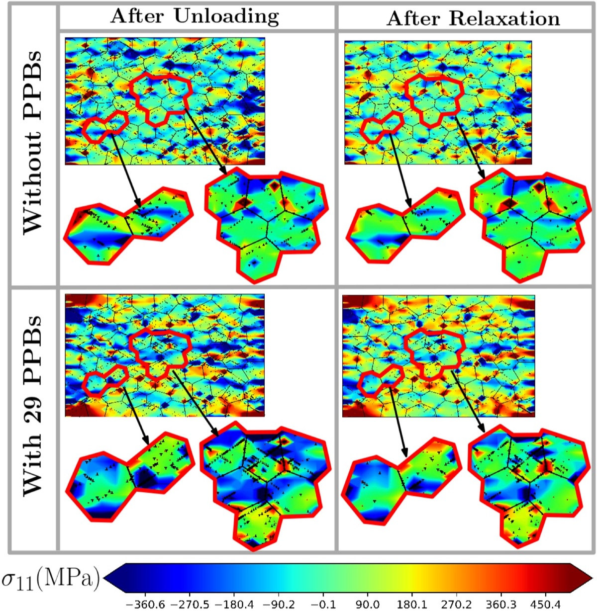
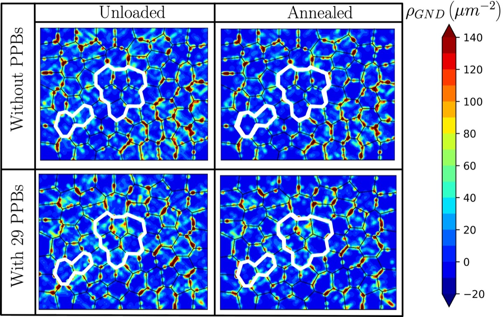

Dislocation pinning
PPB clusters restrict transmission and promote local pile-ups and back stresses.
Published research | ASME | 2026
A polycrystalline discrete dislocation dynamics investigation of how PPB size, number, and spatial arrangement govern dislocation pinning, strain hardening, and residual-stress retention.
Mechanistic focus
Prior particle boundaries formed during powder-metallurgy processing can remain as strong internal barriers after consolidation. The study represents these interfaces within a realistic polycrystalline DDD framework and examines their influence during loading, unloading, and stress-free annealing.
The simulations isolate a consistent mechanism: PPBs restrict transmission, promote localized pile-ups and back stresses, and preserve microstructural heterogeneity after unloading. Their influence depends on spatial organization as well as boundary population.
Principal findings
PPB clusters restrict transmission and promote local pile-ups and back stresses.
Larger and more distributed PPB populations increase dislocation immobilization and strain hardening.
PPB-adjacent regions retain stronger compressive residual stresses after unloading and annealing.
Mechanism in motion
The videos show how internal boundary clusters change the spatial organization of dislocation activity in the polycrystalline aggregate.


Microstructure-resolved evidence

